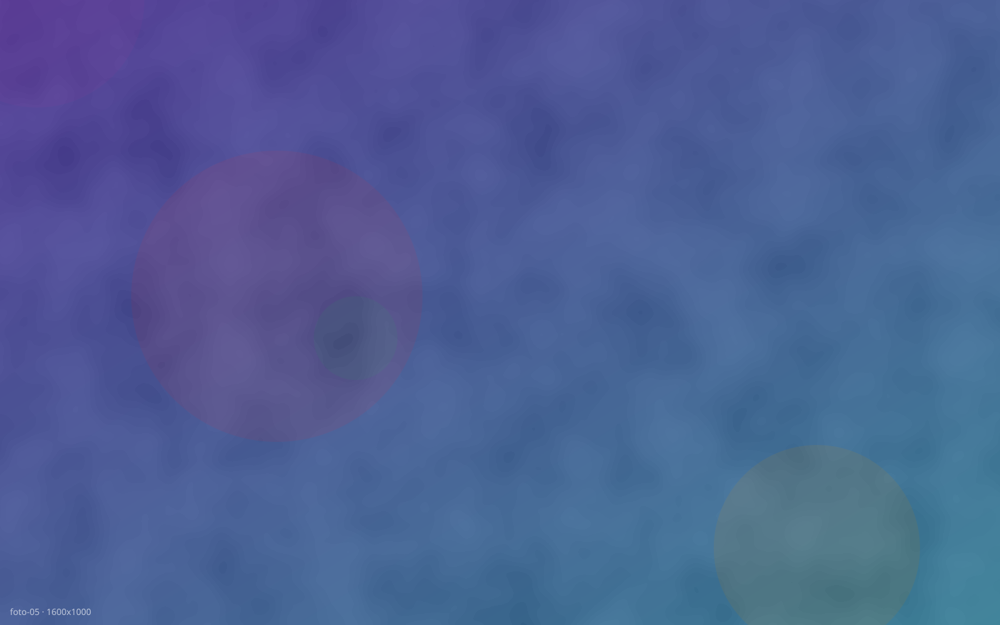

Abrir pestaña con JavaScript
window.open(). La pestaña nueva envía un mensaje de vuelta con postMessage antes de cerrarse.
Esperando apertura de la pestaña…
Abre una pestaña/ventana nueva y espera un mensaje de vuelta antes de darse por completada. Útil para probar el manejo de múltiples páginas/contextos.

window.open(). La pestaña nueva envía un mensaje de vuelta con postMessage antes de cerrarse.